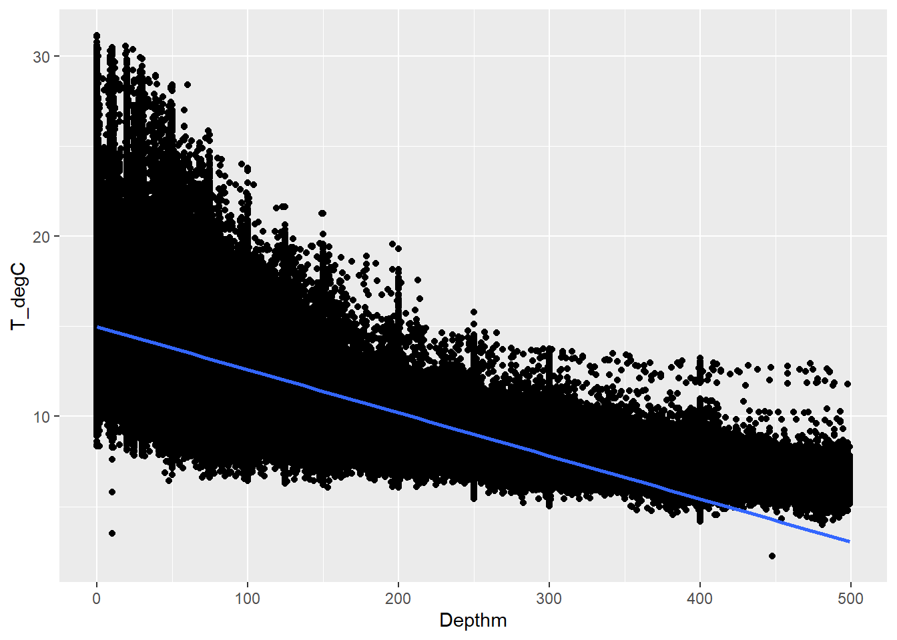

Blog Posts
A Brief Introduction To Adversarial Networks

Most people have seen deep fakes and AI generated images online but people often don’t know the underlying technology behind it. For my senior Capstone, I am conducting a research project which uses Adversarial Networks and found this to be a very cool realm of machine learning.

The basic design of a Adversarial system include two different networks, the generator and the discriminator. The Generator will simply take in a random seed as an input and use that number to calculate pixel values. The Discriminator will be paired with a training set which is a mix of real images and generated images. It will then train over this set and classify them as either real or fake. Both networks will then be trained on the accuracy of the discriminator but in opposite directions. While the discriminator will try to maximize it’s accuracy, the generator will try to minimize it by generating images that the discriminator will think its real. This process has been used and has produce some facinating results in the machine learning sphere.
Tidy Models Tutorial
In this tutorial I will walk you through how to fit a linear model to a data set using the tidy models package. In this tutorial I will be using a CalCOFI data set of oceanic measurements of temperature in Celsius and depth in Meters.
Step 1 - Libraries
library(tidymodels)## Registered S3 method overwritten by 'tune':
## method from
## required_pkgs.model_spec parsnip## -- Attaching packages -------------------------------------- tidymodels 0.1.4 --## v broom 0.7.12 v recipes 0.1.17
## v dials 0.1.0 v rsample 0.1.1
## v dplyr 1.0.7 v tibble 3.1.6
## v ggplot2 3.3.5 v tidyr 1.2.0
## v infer 1.0.0 v tune 0.1.6
## v modeldata 0.1.1 v workflows 0.2.4
## v parsnip 0.1.7 v workflowsets 0.1.0
## v purrr 0.3.4 v yardstick 0.0.9## -- Conflicts ----------------------------------------- tidymodels_conflicts() --
## x purrr::discard() masks scales::discard()
## x dplyr::filter() masks stats::filter()
## x dplyr::lag() masks stats::lag()
## x recipes::step() masks stats::step()
## * Dig deeper into tidy modeling with R at https://www.tmwr.orglibrary(tidyverse)## -- Attaching packages --------------------------------------- tidyverse 1.3.1 --## v readr 2.0.1 v forcats 0.5.1
## v stringr 1.4.0## -- Conflicts ------------------------------------------ tidyverse_conflicts() --
## x readr::col_factor() masks scales::col_factor()
## x purrr::discard() masks scales::discard()
## x dplyr::filter() masks stats::filter()
## x stringr::fixed() masks recipes::fixed()
## x dplyr::lag() masks stats::lag()
## x readr::spec() masks yardstick::spec()library(ggplot2)
library(readr)Step 2 - Import dataset
CalCOFI <- read.csv("CalCOFI.csv")Step 3 - Initial Visualization
CalCOFI %>%
ggplot(aes(Depthm, T_degC)) + geom_point() + geom_smooth(method = "lm", se = FALSE)## `geom_smooth()` using formula 'y ~ x'
Step 4 - Build and Fit Model
# Build
model <- linear_reg() %>%
set_engine("lm")
# Fit
fit <- model %>%
fit(T_degC~Depthm, data = CalCOFI)
tidy(fit)## # A tibble: 2 x 5
## term estimate std.error statistic p.value
## <chr> <dbl> <dbl> <dbl> <dbl>
## 1 (Intercept) 12.9 0.00415 3108. 0
## 2 Depthm -0.00912 0.0000106 -860. 0